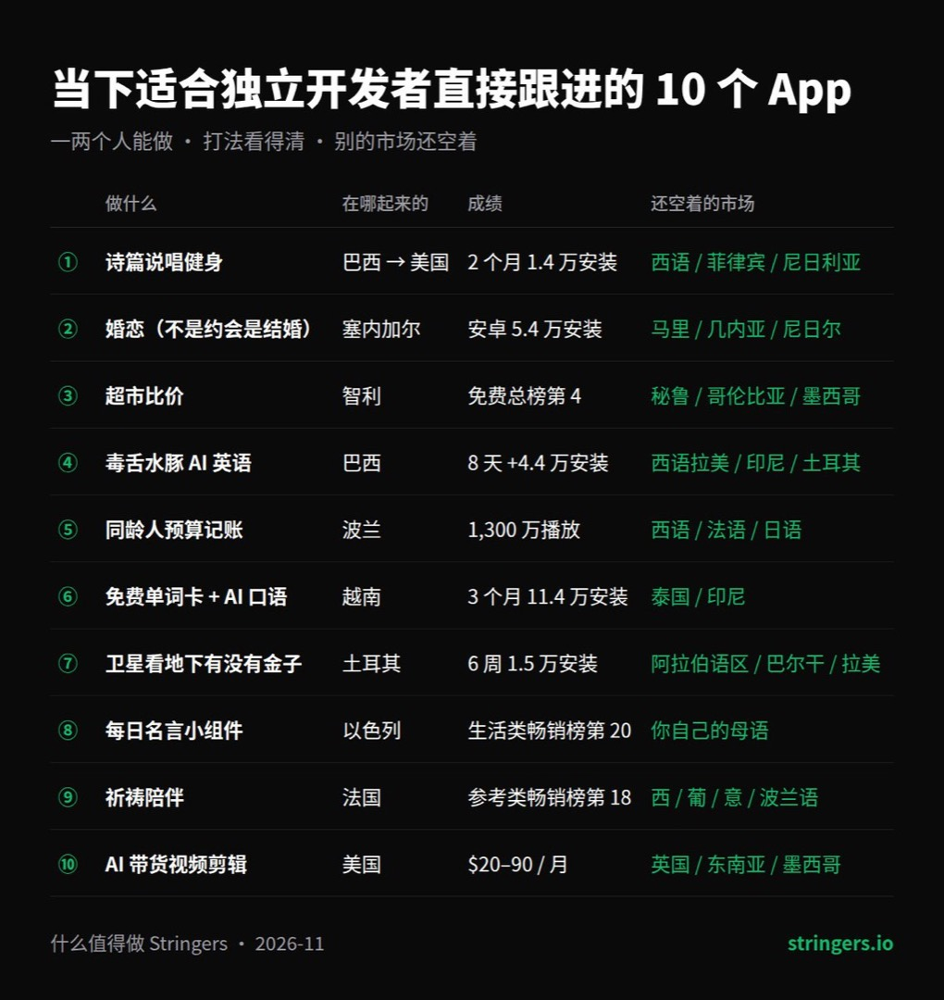
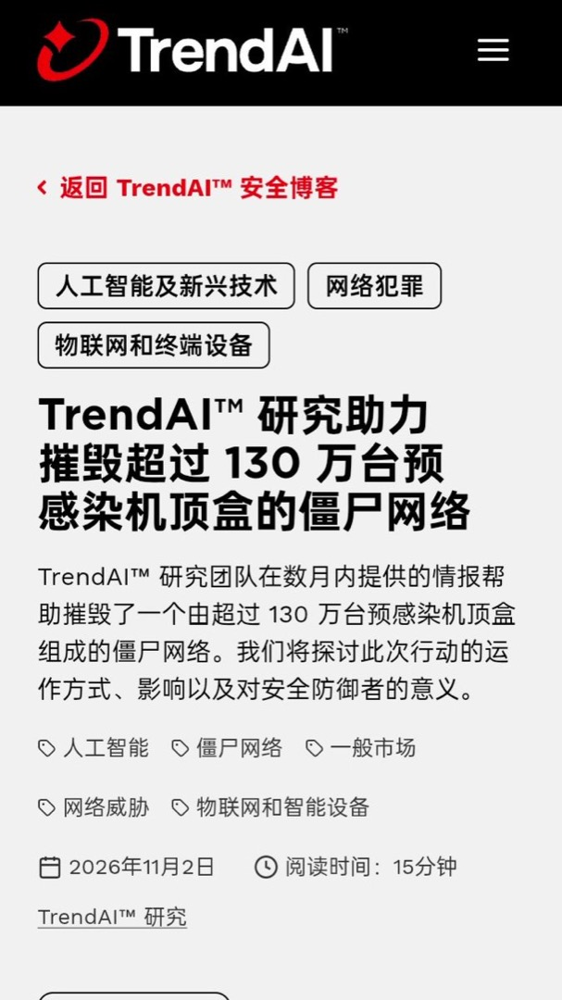
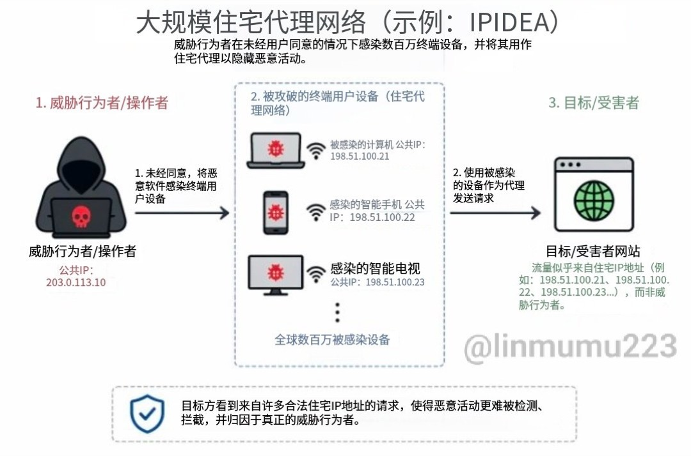
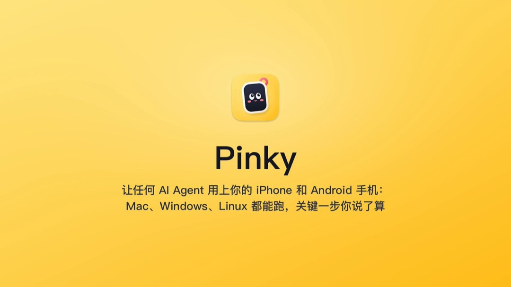

本期速览
02 国行苹果AI上线四项首发功能
03 深圳厂商固件后门出租147万台设备
04 Pinky让AI Agent接管手机操作
05 DeepSeek将推插件市场与作者扶持
06 GitLab用AI减少流水线迁移81%
01｜独立开发者10个小App出海打法
来源（X） · @stringers_cn · 2026-11-08 13:51
我们每天都在看全球各个国家新冒出来的小 App，这次挑了 10 个：一两个人能做、打法看得清、别的市场还空着。
① 巴西「诗篇说唱」健身 App
把圣经诗篇做成健身说唱，先在巴西卖，再翻成英文卖美国。两个月 1.4 万安装，进了美区音乐畅销榜。
→ 换个人群或语言照做：西语、菲律宾、尼日利亚。
② 塞内加尔婚恋 App
口号是「不是约会，是结婚」，靠沃洛夫语段子和当地达人，安卓 5.4 万安装，TikTok 官号 53 万粉。
→ 马里、几内亚、尼日尔这些国家还空着。
③ 智利超市比价 App
一个人、一个 TikTok 号，天天拍同一件商品在六家超市的差价，冲上智利免费总榜第 4。
→ 秘鲁、哥伦比亚、墨西哥的超市，或者药房、宠物粮比价。
④ 巴西「毒舌水豚」英语 App
AI 口语陪练，角色是一只会骂人的水豚。8 天新增 4.4 万安装，稳在巴西教育畅销榜 20 多名。
→ 西语拉美、印尼、土耳其，换一个当地有梗的动物。
⑤ 波兰记账 App
拍「一个护士的工资单怎么花」这类同龄人预算视频，5 个号 1,300 万播放，意大利财务畅销榜第 15。
→ 换到西语、法语、日语，或者接到租房、存首付、情侣 AA 上。
⑥ 越南单词卡 App
免费单词卡把人吸进来，AI 口语收费。3 个多月 11.4 万安装，越南教育畅销榜前 25。
→ 泰国、印尼这些同样在用 Quizlet 的国家。
⑦ 土耳其卫星寻宝 App
在地图上圈一块地，花 559 里拉看地下有没有金子。6 周 1.5 万安装，工具类畅销榜 30 多名。
→ 阿拉伯语区、巴尔干、拉美这些寻宝文化浓的地方。
⑧ 以色列名言小组件
一个人做了两个月，把「每日名言」做成希伯来语小组件，以色列生活类畅销榜最高第 20。
→ 搬到你自己的母语：本地经典 + 名言 + 订阅。
⑨ 法国祈祷陪伴 App
两兄弟靠几个 TikTok 小号，排到法国参考类畅销榜第 18，跟大厂 Hallow 同一档。
→ 西语、葡语、意大利语、波兰语还空着。
⑩ 美国 AI 带货剪辑 App
帮一天拍 20 条带货视频的达人剪片，每月 20 到 90 美元，稳在美区照片视频畅销榜 70 名左右。
→ 英国、东南亚、墨西哥这些已经开了 TikTok Shop 的国家。
每个 App 怎么起来的、具体怎么跟，完整拆解放在评论区。

02｜国行苹果AI上线四项首发功能
来源（X） · @zhangwj3115 · 2026-11-09 04:10
先说结论：功能马马虎虎，隐私是真行
首发的就那几样：
AI 写作、实时翻译、图片消除、智能通知
WWDC 上画的其他饼，这次没端上来
03｜深圳厂商固件后门出租147万台设备
来源（X） · @linmumu223 · 2026-11-08 17:00
Google 最近披露了一起离谱的事件：一家深圳厂商 Videostrong，被发现在超过200款安卓电视盒子的固件中预装后门，涉及147万台设备。
这些设备会在用户不知情的情况下，偷偷接入住宅代理网络。简单来说，就是把你家里的宽带 IP 和网络带宽出租给别人使用。别人花钱买代理，就能通过你家的网络上网，让自己的网络请求看起来像是来自一个真实的普通家庭。
更夸张的是，TrendAI 统计发现，短短4个月就出现了384万个不同的住宅出口 IP，每天平均有18万个 IP 在线，峰值超过36万个。
所以，现在你应该明白，为什么有些住宅 IP 代理商能够提供覆盖全球大量国家和地区的 IP 池了吧。


04｜Pinky让AI Agent接管手机操作
来源（X） · @brucexu_eth · 2026-11-08 12:20
1. 之前 iphone-use 做不到的，现在能做到了。之前有一个功能，或者是微信小程序的几个表单老是点击不到，但是现在是 OK 的。
2. 使用非常方便，就是下载 APP 打开，然后连接上相关软件，然后开一个新 session，刷新一下 MCP 就可以用了。它用 MCP 的方式注入到这个 Coding Agent 里面，之前要用 Skills 安装挺多东西的。
3. 使用一个 APP，然后能够直接看到手机界面，同时也可以直接用鼠标操作。之前的 iPhone 用户遇到了相关的事情，需要在手机上用手操作，但是手机上会有一个 Automation running 的遮罩，就很麻烦。现在基本上都能在电脑上直接操作。
4. 授权非常清晰，有一些涉及到敏感信息或者操作的，会直接拦住 coding agent，然后提醒我来继续操作。之前的话，iPhone use 都是在 coding agent 里面，就是我比较难注意到还需要有什么授权之类的问题。这个非常清晰，而且 Developer 模式还可以把所有的具体操作都展示出来，我也能够比较清晰的知道它具体做了什么，有没有作恶。
NB。
引用内容
DIŸgöd ☀️ @DIYgod
付款前会停下来等你点头，发消息、删除也可以设成先问，随时能接管，每一步都有录屏。原生应用，安装包十几 MB
GitHub：https://github.com/DIYgod/pinky
Discord：https://discord.gg/S27b7SHjng

05｜DeepSeek将推插件市场与作者扶持
来源（X） · @wquguru · 2026-11-09 00:15
很多DeepSeek Harness的插件作者，最近都带着这个担忧去问在 @tianyi ，Tianyi 则讲了一个手机操作系统的故事来回答。
手机出厂时都会自带闹钟和计算器，用来满足基本需求。但做系统的厂商，心里盼着有人能做出比自带功能更好用的闹钟和计算器，甚至用系统 API 做出连发明手机的人都没想过的 App。
DeepSeek Harness 想做 Agent 时代的操作系统。在一切皆插件的设计下，哪怕是官方内置的通用功能，也随时可以被第三方插件替换掉。
回看这几个月的进度，故事已经照进现实。8 月 13 日 v0.1 才刚上线，9 月 29 日发了桌面端，今天 GitHub 已经拿到 27.6 万星。截至 11 月 4 日，算上官方 API 用户，日活到了 154 万，每天消耗约 92 万亿 token。
社区里发展出了约 3.5 万个第三方插件，约 60% 的活跃用户自己做过或装过至少一个插件。像 @woniuniuniuCN 的创作工作台 dsh-media-desk、@op7418 歸藏的设计插件 dsh-guizang-design、@bowenliang123 的上下文洞察 dsh-context，还有 Phil-Fan 用来读论文的 agentero-dsh，都被官方专门点名。
接下来官方打算把插件 API 的稳定性和兼容性做好，加强安全，还要做官方插件市场，并推出给作者的扶持计划，提供 token 资助、技术交流和作品推广，也欢迎创业公司和企业以插件形式接入。目前先开了一张意向表单，具体规则等正式上线公布。
总之，基于 DeepSeek Harness 的应用生态要起飞了。
你平时用 DeepSeek Harness 最常装哪个插件？
06｜GitLab用AI减少流水线迁移81%
来源（X） · @gitlab · 2026-10-29 07:58
中文译文
CI/CD 现代化不再需要花费数年时间。看看 agentic AI 在 GitLab 测试中如何将流水线转换工作量减少高达 81%。
原文
CI/CD modernization no longer has to take years. See how agentic AI reduced pipeline translation effort by up to 81% in GitLab testing.